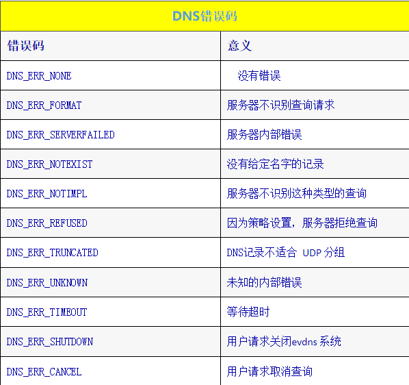

LibEvent提供了少量的API来解决DNS名称,以及用于实现简单的DNS服务.
将由名称查询的高层机制开始介绍,然后介绍低层机制和服务机制.
注意LibEvent的当前DNS客户端实现有限制,不支持TCP查询,DNSSec或任意记录类型,我们希望在将来版本LibEvent修复这些问题,但不是当前版本.
可移植的阻塞式名称解析
为移植已经使用阻塞式名字解析的程序,libevent提供了标准getaddrinfo()接口的可移植实现.对于需要运行在没有getaddrinfo()函数,或者getaddrinfo()不像我们的替代函数那样遵循标准的平台上的程序,这个替代实现很有用.
struct evutil_addrinfo
{
int ai_flags;
int ai_family;
int ai_socktype;
int ai_protocol;
size_t ai_addrlen;
char* ai_canonname;
struct sockaddr* ai_addr;
struct evutil_addrinfo* ai_next;
};
#define EVUTIL_AI_PASSIVE / * ...* /
#define EVUTIL_AI_CANONNAME / * ...* /
#define EVUTIL_AI_NUMERICHOST / * ...* /
#define EVUTIL_AI_NUMERICSERV / * ...* /
#define EVUTIL_AI_V4MAPPED / * ...* /
#define EVUTIL_AI_ALL / * ...* /
#define EVUTIL_AI_ADDRCONFIG / * ...* /
int evutil_getaddrinfo(const char* nodename, const char * servname,
const struct evutil_addrinfo* hints, struct evutil_addrinfo ** res);
void evutil_freeaddrinfo(struct evutil_addrinfo* ai);
const char* evutil_gai_strerror(int err);
evutil_getaddrinfo()函数试图根据hints给出的规则,解析指定的nodename和servname ,建立一个evutil_addrinfo结构体链表,将其存储在*res中.成功时函数返回0,失败时返回非零的错误码.
必须至少提供 nodename和servname 中的一个.如果提供了nodename,则它是IPv4字面地址(如127.0.0.1)、IPv6字面地址(如::1) ,或者是DNS名字(如www.example.com) .如果提供了servname,则它是某网络服务的符号名(如https) ,或者是一个包含十进制端口号的字符串(如443) .如果不指定servname,则*res中的端口号将是零.
如果不指定nodename,则*res中的地址要么是localhost(默认) ,要么是"任意"(如果设置了EVUTIL_AI_PASSIVE) .
hints的ai_flags 字段指示evutil_getaddrinfo如何进行查询,它可以包含0个或者多个以或运算连接的下述标志:
EVUTIL_AI_PASSIVE:这个标志指示将地址用于监听,而不是连接.通常二者没有差别,除非nodename为空:对于连接,空的nodename表示localhost (127.0.0.1或者::1) ;而对于监听,空的nodename表示任意(0.0.0.0或者::0) .
EVUTIL_AI_CANONNAME:如果设置了这个标志,则函数试图在ai_canonname字段中报告标准名称.
EVUTIL_AI_NUMERICHOST:如果设置了这个标志,函数仅仅解析数值类型的IPv4和IPv6地址;如果nodename要求名字查询,函数返回EVUTIL_EAI_NONAME错误.
EVUTIL_AI_NUMERICSERV:如果设置了这个标志,函数仅仅解析数值类型的服务名.如果servname不是空,也不是十进制整数,函数返回EVUTIL_EAI_NONAME错误.
EVUTIL_AI_V4MAPPED:这个标志表示,如果ai_family是AF_INET6,但是找不到IPv6地址,则应该以v4映射(v4-mapped)型IPv6地址的形式返回结果中的IPv4地址.当前evutil_getaddrinfo()不支持这个标志,除非操作系统支持它.
EVUTIL_AI_ALL:如果设置了这个标志和EVUTIL_AI_V4MAPPED,则无论结果是否包含IPv6地址,IPv4地址都应该以v4映射型IPv6地址的形式返回.当前evutil_getaddrinfo()不支持这个标志,除非操作系统支持它.
EVUTIL_AI_ADDRCONFIG:如果设置了这个标志,则只有系统拥有非本地的IPv4地址时,结果才包含IPv4地址;只有系统拥有非本地的IPv6地址时,结果才包含IPv6地址.
hints的ai_famil y字段指示evutil_getaddrinfo()应该返回哪个地址.字段值可以是AF_INET ,表示只请求IPv4地址;也可以是AF_INET6,表示只请求IPv6地址;或者用AF_UNSPEC表示请求所有可用地址.
hints的ai_socktype和ai_protocol字段告知evutil_getaddrinfo()将如何使用返回的地址.这两个字段值的意义与传递给socket()函数的socktype和protocol参数值相同.
成功时函数新建一个 evutil_addrinfo结构体链表,存储在*res中,链表的每个元素通过ai_next指针指向下一个元素.因为链表是在堆上分配的,所以需要调用evutil_freeaddrinfo()进行释放.
如果失败,函数返回数值型的错误码:
EVUTIL_EAI_ADDRFAMILY:请求的地址族对nodename没有意义.
EVUTIL_EAI_AGAIN:名字解析中发生可以恢复的错误,请稍后重试.
EVUTIL_EAI_FAIL:名字解析中发生不可恢复的错误:解析器或者DNS服务器可能已经崩溃.
EVUTIL_EAI_BADFLAGS:hints中的ai_flags字段无效.
EVUTIL_EAI_FAMILY:不支持hints中的ai_family字段.
EVUTIL_EAI_MEMORY:回应请求的过程耗尽内存.
EVUTIL_EAI_NODATA:请求的主机不存在.
EVUTIL_EAI_SERVICE:请求的服务不存在.
EVUTIL_EAI_SOCKTYPE:不支持请求的套接字类型,或者套接字类型与ai_protocol不匹配.
EVUTIL_EAI_SYSTEM:名字解析中发生其他系统错误,更多信息请检查errno.
EVUTIL_EAI_CANCEL:应用程序在解析完成前请求取消.evutil_getaddrinfo()函数从不产生这个错误,但是后面描述的evdns_getaddrinfo()可能产生这个错误.调用evutil_gai_strerror()可以将上述错误值转化成描述性的字符串.
注意如果操作系统定义了 addrinfo结构体,则evutil_addrinfo仅仅是操作系统内置的addrinfo结构体的别名.类似地,如果操作系统定义了AI_*标志,则相应的EVUTIL_AI_*标志仅仅是本地标志的别名;如果操作系统定义了EAI_*错误,则相应的EVUTIL_EAI_*只是本地错误码的别名.
示例：解析主机名，建立阻塞连接
#include <sys/socket.h>
#include <sys/types.h>
#include <stdio.h>
#include <string.h>
#include <assert.h>
#include <unistd.h>
evutil_socket_t get_tcp_socket_for_host(const char* hostname, ev_uint16_t port)
{
char port_buf[6];
struct evutil_addrinfo hints;
struct evutil_addrinfo* answer = NULL;
int err;
evutil_socket_t sock;
/* Convert the port to decimal.*/
evutil_snprintf(port_buf, sizeof(port_buf), "%d", (int)port);
/* Build the hints to tell getaddrinfo how to act.*/
memset(&hints, 0, sizeof(hints));
hints.ai_family = AF_UNSPEC; /* v4 or v6 is fine.*/
hints.ai_socktype = SOCK_STREAM;
hints.ai_protocol = IPPROTO_TCP; /* We want a TCP socket*/
/* Only return addresses we can use.*/
hints.ai_flags = EVUTIL_AI_ADDRCONFIG;
/* Look up the hostname.*/
err = evutil_getaddrinfo(hostname, port_buf, &hints, &answer);
if (err != 0)
{
fprintf(stderr, "Error while resolving ’%s’: %s",
hostname, evutil_gai_strerror(err));
return -1;
}
/* If there was no error, we should have at least one answer.*/
assert(answer);
/* Just use the first answer.*/
sock = socket(answer->ai_family,
answer->ai_socktype,
answer->ai_protocol);
if (sock < 0)
return -1;
if (connect(sock, answer->ai_addr, answer->ai_addrlen))
{
/* Note that we’re doing a blocking connect in this function.*
If this were nonblocking, we’d need to treat some errors*
(like EINTR and EAGAIN) specially.*/
EVUTIL_CLOSESOCKET(sock);
return -1;
}
return sock;
}
使用evdns_getaddrinfo()进行非阻塞名字解析
通常的 getaddrinfo(),以及上面的evutil_getaddrinfo()的问题是,它们是阻塞的:调用线程必须等待函数查询DNS服务器,等待回应.对于libevent,这可能不是期望的行为.
对于非阻塞式应用,libevent提供了一组函数用于启动DNS请求,让libevent等待服务器回应.
typedef void ( * evdns_getaddrinfo_cb)(int result,
struct evutil_addrinfo* res,
void * arg);
struct evdns_getaddrinfo_request;
struct evdns_getaddrinfo_request* evdns_getaddrinfo(
struct evdns_base* dns_base,
const char* nodename,
const char * servname,
const struct evutil_addrinfo* hints_in,
evdns_getaddrinfo_cb cb,
void* arg);
void evdns_getaddrinfo_cancel(struct evdns_getaddrinfo_request* req);
除了不会阻塞在 DNS查询上,而是使用libevent的底层DNS机制进行查询外,evdns_getaddrinfo()和evutil_getaddrinfo()是一样的.因为函数不是总能立即返回结果,所以需要提供一个evdns_getaddrinfo_cb类型的回调函数,以及一个给回调函数的可选的用户参数.
此外,调用evdns_getaddrinfo()还要求一个evdns_base指针.evdns_base结构体为libevent的DNS解析器保持状态和配置.关于如何获取evdns_base指针,请看下一节.
如果失败或者立即成功,函数返回NULL.否则,函数返回一个evdns_getaddrinfo_request指针.在解析完成之前可以随时使用evdns_getaddrinfo_cancel()和这个指针来取消解析.
注意:不论evdns_getaddrinfo()是否返回NULL,是否调用了evdns_getaddrinfo_cancel() ,回调函数总是会被调用.
evdns_getaddrinfo()内部会复制nodename、servname和hints参数,所以查询进行过程中不必保持这些参数有效.
示例：使用evdns_getaddrinfo()的非阻塞查询
#include <event2/dns.h>
#include <event2/util.h>
#include <event2/event.h>
#include <sys/socket.h>
#include <stdio.h>
#include <stdlib.h>
#include <string.h>
#include <assert.h>
int n_pending_requests = 0;
struct event_base* base = NULL;
struct user_data
{
char* name; /*
the name we’re resolving*/
int idx; /* its position on the command line*/
};
void callback(int errcode, struct evutil_addrinfo* addr, void * ptr)
{
struct user_data* data = ptr;
const char* name = data->name;
if (errcode)
{
printf("%d. %s -> %s\n",
data->idx, name,
evutil_gai_strerror(errcode));
}
else
{
struct evutil_addrinfo* ai;
printf("%d. %s", data->idx, name);
if (addr->ai_canonname)
printf(" [%s]", addr->ai_canonname);
puts("");
for (ai = addr; ai; ai = ai->ai_next)
{
char buf[128];
const char* s = NULL;
if (ai->ai_family == AF_INET) {
struct sockaddr_in* sin = (struct sockaddr_in * )ai->ai_addr;
s = evutil_inet_ntop(AF_INET, &sin->sin_addr, buf, 128);
}
else if (ai->ai_family == AF_INET6)
{
struct sockaddr_in6* sin6 =(sockaddr_in6 * )ai->ai_addr;
s = evutil_inet_ntop(AF_INET6, &sin6->sin6_addr, buf, 128);
}
if (s)
printf(" -> %s\n", s);
}
evutil_freeaddrinfo(addr);
}
free(data->name);
free(data);
if (--n_pending_requests == 0)
event_base_loopexit(base, NULL);
}
/* Take a list of domain names from the
command line and resolve them in parallel.*/
int main(int argc, char** argv)
{
int i;
struct evdns_base* dnsbase;
if (argc == 1)
{
puts("No addresses given.");
return 0;
}
base = event_base_new();
if (!base)
return 1;
dnsbase = evdns_base_new(base, 1);
if (!dnsbase)
return 2;
for (i = 1; i < argc; ++i)
{
struct evutil_addrinfo hints;
struct evdns_getaddrinfo_request* req;
struct user_data* user_data;
memset(&hints, 0, sizeof(hints));
hints.ai_family = AF_UNSPEC;
hints.ai_flags = EVUTIL_AI_CANONNAME;
/* Unless we specify a socktype, we’ll get at least two entries for*
each address: one for TCP and one for UDP. That’s not what we*
want.*/
hints.ai_socktype = SOCK_STREAM;
hints.ai_protocol = IPPROTO_TCP;
if (!(user_data = malloc(sizeof(struct user_data))))
{
perror("malloc");
exit(1);
}
if (!(user_data->name = strdup(argv[i])))//strdup堆区分配内存
{
perror("strdup");
exit(1);
}
user_data->idx = i;
++n_pending_requests;
req = evdns_getaddrinfo(
dnsbase, argv[i], NULL /* no service name given*/,
&hints,
callback,
user_data);
if (req == NULL)
{
printf(" [request for %s returned immediately]\n", argv[i]);
/* No need to free user_data or decrement n_pending_requests; that*happened in the callback.*/
}
}
if (n_pending_requests)
event_base_dispatch(base);
evdns_base_free(dnsbase, 0);
event_base_free(base);
return 0;
}
这些函数是2.0.3-alpha版本新增加的,声明在event2/dns.h中.
创建和配置evdns_base
使用evdns进行非阻塞DNS查询之前需要配置一个evdns_base.evdns_base存储名字服务器列表和DNS配置选项,跟踪活动的、进行中的DNS请求.
struct evdns_base* evdns_base_new(struct event_base * event_base,int initialize);
void evdns_base_free(struct evdns_base* base, int fail_requests);
成功时 evdns_base_new()返回一个新建的evdns_base,失败时返回NULL.如果initialize参数为true,函数试图根据操作系统的默认值配置evdns_base;否则,函数让evdns_base为空,不配置名字服务器和选项.
可以用evdns_base_free()释放不再使用的evdns_base.如果fail_request参数为true,函数会在释放evdns_base前让所有进行中的请求使用取消错误码调用其回调函数.
使用系统配置初始化evdns
如果需要更多地控制evdns_base如何初始化,可以为evdns_base_new()的initialize参数传递0,然后调用下述函数.
#define DNS_OPTION_SEARCH 1
#define DNS_OPTION_NAMESERVERS 2
#define DNS_OPTION_MISC 4
#define DNS_OPTION_HOSTSFILE 8
#define DNS_OPTIONS_ALL 15
int evdns_base_resolv_conf_parse(struct evdns_base
* base, int flags,
const char* filename);
#ifdef WIN32
int evdns_base_config_windows_nameservers(struct evdns_base* );
#define EVDNS_BASE_CONFIG_WINDOWS_NAMESERVERS_IMPLEMENTED
#endif
evdns_base_resolv_conf_parse()函数扫描resolv.conf格式的文件filename,从中读取flags指示的选项(关于resolv.conf文件的更多信息,请看Unix手册) .
DNS_OPTION_SEARCH:请求从resolv.conf文件读取domain和search字段以及ndots选项,使用它们来确定使用哪个域(如果存在)来搜索不是全限定的主机名.
DNS_OPTION_NAMESERVERS:请求从resolv.conf中读取名字服务器地址.
DNS_OPTION_MISC:请求从resolv.conf文件中读取其他配置选项.
DNS_OPTION_HOSTSFILE:请求从/etc/hosts文件读取主机列表.
DNS_OPTION_ALL:请求从resolv.conf文件获取尽量多的信息.
Windows中没有可以告知名字服务器在哪里的resolv.conf文件,但可以用evdns_base_config_windows_nameservers()函数从注册表(或者NetworkParams,或者其他隐藏的地方)读取名字服务器.
resolv.conf格式文件
resolv.conf是一个文本文件,每一行要么是空行,要么包含以#开头的注释,要么由一个跟随零个或者多个参数的标记组成.可以识别的标记有:
nameserver:必须后随一个名字服务器的IP地址.作为一个扩展,libevent允许使用IP:Port或者[IPv6]:port语法为名字服务器指定非标准端口.
domain:本地域名
options:空格分隔的选项列表.选项要么是空字符串,要么具有格式option:value(如果有参数) .可识别的选项有：
dots:INTEGER:用于配置搜索,请参考上面的"search",默认值是1.
timeout:FLOAT:等待DNS服务器响应的时间,单位是秒.默认值为5秒.
max-timeouts:INT:名字服务器响应超时几次才认为服务器当机？默认是3次.
max-inflight:INT:最多允许多少个未决的DNS请求?(如果试图发出多于这么多个请求,则过多的请求将被延 迟,直到某个请求被响应或者超时) .默认值是64.
attempts:INT:在放弃之前重新传输多少次DNS请求？默认值是3
randomize-case:INT:如果非零,evdns会为发出的DNS请求设置随机的事务ID,并且确认回应具有同样的随机事务 ID值.这种称作"0x20 hack"的机制可以在一定程度上阻止对DNS的简单激活事件攻击.这个选项的默认值是1
bind-to:ADDRESS:如果提供,则向名字服务器发送数据之前绑定到给出的地址.对于2.0.4-alpha版本,这个设置仅应用于后面的名字服务器条目.
initial-probe-timeout:FLOAT:确定名字服务器当机后,libevent以指数级降低的频率探测服务器以判断服务器是否恢复.这个选项配置(探测时间间隔)序列中的第一个超时,单位是秒.默认值是10.
getaddrinfo-allow-skew:FLOAT:同时请求IPv4和IPv6地址时, evdns_getaddrinfo()用单独的DNS请求包分
别请求两种地址 ,因为有些服务器不能在一个包中同时处理两种请求.服务器回应一种地址类型后,函数等待一段时间确定另一种类型的地址是否到达.这个选项配置等待多长时间,单位是秒.默认值是3秒.不识别的字段和选项会被忽略.
手动配置evdns
如果需要更精细地控制evdns的行为可以使用下述函数：
int evdns_base_nameserver_sockaddr_add(struct evdns_base* base,
const struct sockaddr* sa,
ev_socklen_t len,
unsigned flags);
int evdns_base_nameserver_ip_add(struct evdns_base* base,
const char* ip_as_string);
int evdns_base_load_hosts(struct evdns_base* base,
const char * hosts_fname);
void evdns_base_search_clear(struct evdns_base* base);
void evdns_base_search_add(struct evdns_base* base,
const char * domain);
void evdns_base_search_ndots_set(struct evdns_base* base, int ndots);
int evdns_base_set_option(struct evdns_base* base,
const char * option,
const char* val);
int evdns_base_count_nameservers(struct evdns_base* base);
evdns_base_nameserver_sockaddr_add()函数通过地址向evdns_base添加名字服务器 。当前忽略flags参数，为向前兼容考虑，应该传入0。成功时函数返回0，失败时返回负值 。（这个函数在2.0.7-rc版本加入）
evdns_base_nameserver_ip_add()函数向evdns_base加入字符串表示的名字服务器，格式可以是IPv4地址、IPv6地址、带端口号的IPv4地址（IPv4:Port)，或者带端口号的IPv6地址（[IPv6]:Port） 。成功时函数返回0，失败时返回负值。
evdns_base_load_hosts()函数从hosts_fname文件中载入主机文件（格式与/etc/hosts相同） 。成功时函数返回0，失败时返回负值。
evdns_base_search_clear()函数从evdns_base中移除所有（通过search配置的）搜索后缀；evdns_base_search_add()则添加后缀。
evdns_base_set_option()函数设置evdns_base中某选项的值。选项和值都用字符串表示 。（2.0.3版本之前，选项名后面必须有一个冒号）解析一组配置文件后，可以使用evdns_base_count_nameservers()查看添加了多少个名字服务器。
库端配置
有一些为 evdns模块设置库级别配置的函数：
typedef void ( * evdns_debug_log_fn_type)(int is_warning, const char* msg);
void evdns_set_log_fn(evdns_debug_log_fn_type fn);
void evdns_set_transaction_id_fn(ev_uint16_t ( * fn)(void));
因为历史原因，evdns子系统有自己单独的日志。evdns_set_log_fn()可以设置一个回调函数，以便在丢弃日志消息前做一些操作。
为安全起见，evdns需要一个良好的随机数发生源：使用0x20 hack的时候，evdns通过这个源来获取难以猜（hard-to-guess）的事务ID以随机化查询（请参考“randomize-case”选项） 。然而，较老版本的libevent没有自己的安全的RNG（随机数发生器） 。此时可以通过调用evdns_set_transaction_id_fn()，传入一个返回难以预测（hard-to-predict）的两字节无符号整数的函数，来为evdns设置一个更好的随机数发生器。
2.0.4-alpha以及后续版本中libevent有自己内置的安全的RNGe，vdns_set_transaction_id_fn()就没有效果了。
底层DNS接口：
有时候需要启动能够比从 evdns_getaddrinfo()获取的DNS 请求进行更精细控制的特别的DNS请求，libevent也为此提供了接口。
缺少的特征:当前libevent 的DNS 支持缺少其他底层DNS 系统所具有的一些特征，如支持任意请求类型和TCP 请求。如果需要evdns 所不具有的特征，欢迎贡献一个补丁。也可以看看其他全特征的DNS 库，如c-ares。
#define DNS_QUERY_NO_SEARCH /* ...*/
#define DNS_IPv4_A /* ...*/
#define DNS_PTR /* ...*/
#define DNS_IPv6_AAAA /* ...*/
typedef void ( * evdns_callback_type)(int result, char type, int count,
int ttl,
void* addresses,
void * arg);
struct evdns_request* evdns_base_resolve_ipv4(struct evdns_base * base,
const char* name,
int flags,
evdns_callback_type callback,
void * ptr);
struct evdns_request* evdns_base_resolve_ipv6(struct evdns_base * base,
const char* name,
int flags,
evdns_callback_type callback,
void * ptr);
struct evdns_request* evdns_base_resolve_reverse(struct evdns_base * base,
const struct in_addr* in,
int flags,
evdns_callback_type callback,
void* ptr);
struct evdns_request* evdns_base_resolve_reverse_ipv6(
struct evdns_base* base,
const struct in6_addr * in,
int flags,
evdns_callback_type callback,
void* ptr);
这些解析函数为一个特别的记录发起 DNS请求。每个函数要求一个 evdns_base用于发起请求、一个要查询的资源（正向查询时的主机名，或者反向查询时的地址） 、一组用以确定如何进行查询的标志、 一个查询完成时调用的回调函数， 以及一个用户提供的传给回调函数的指针。
flags参数可以是0，也可以用DNS_QUERY_NO_SEARCH 明确禁止原始查询失败时在搜索列表中进行搜索DNS_QUERY_NO_SEARCH对反向查询无效，因为反向查询不进行搜索。
请求完成（不论是否成功） 时回调函数会被调用。回调函数的参数是指示成功或者错误码 （参看下面的 DNS 错误表）的 result、一个记录类型（DNS_IPv4_A、DNS_IPv6_AAAA，或者DNS_PTR） 、addresses中的记录数、以秒为单位的存活时间、地址（查询结果） ，以及用户提供的指针。
发生错误时传给回调函数的 addresses参数为 NULL。没有错误时：对于PTR 记录，addresses是空字符结束的字符串；对于 IPv4记录，则是网络字节序的四字节地址值数组 ；对于IPv6记录，则是网络字节序的16字节记录数组。 （注意：即使没有错误，addresses的个数也可能是0。名字存在，但是没有请求类型的记录时就会出现这种情况）
可能传递给回调函数的错误码如下：

可以用下述函数将错误码转换成错误描述字符串：
const char* evdns_err_to_string(int err);
每个解析函数都返回不透明的 evdns_request结构体指针。回调函数被调用前的任何时候都可以用这个指针来取消请求：
void evdns_cancel_request(struct evdns_base* base,struct evdns_request* req);
用这个函数取消请求将使得回调函数被调用，带有错误码 DNS_ERR_CANCEL。
挂起DNS客户端操作，更换服务器名字
有时候需要重新配置或者关闭 DNS子系统，但不能影响进行中的 DNS请求。
int evdns_base_clear_nameservers_and_suspend(struct evdns_base* base);
int evdns_base_resume(struct evdns_base* base);
evdns_base_clear_nameservers_and_suspend()会移除所有名字服务器，但未决的请求会被保留，直到随后重新添加名字服务器，调用evdns_base_resume()。
这些函数成功时返回0，失败时返回-1。
libevent为实现不重要的 DNS服务器，响应通过 UDP传输的 DNS请求提供了简单机制。本节要求读者对 DNS协议有一定的了解。
创建和关闭DNS服务器
struct evdns_server_port* evdns_add_server_port_with_base(struct event_base* base,
evutil_socket_t socket,
int flags,
evdns_request_callback_fn_type callback,
void* user_data);
typedef void ( * evdns_request_callback_fn_type)(
struct evdns_server_request* request,
void* user_data);
void evdns_close_server_port(struct evdns_server_port* port);
要开始监听 DNS请求，调用 evdns_add_server_port_with_base()。函数要求用于事件处理的event_base、用于监听的UDP 套接字、可用的标志（现在总是0） 、一个收到DNS 查询 时 要 调 用 的 回 调 函 数 ， 以 及 要 传 递 给 回 调 函 数 的 用 户 数 据 指 针 。 函 数 返 回evdns_server_port对象。
使用 DNS服务器完成工作后，需要调用 evdns_close_server_port()。
检测DNS请求
不幸的是，当前 libevent没有提供较好的获取 DNS请求的编程接口，用户需要包含event2/dns_struct.h文件，查看evdns_server_request结构体。
未来版本的 libevent应该会提供更好的方法。
flags字段包含请求中设置的 DNS标志；nquestions字段是请求中的问题数；questions是evdns_server_question结构体指针数组。每个 evdns_server_question包含请求的资源类型（请看下面的 EVDNS_*_TYPE宏列表） 、请求类别（通常为 EVDNS_CLASS_INET） ，以及请求的主机名。
有时 候 需 要 知道 某 特 定 DNS 请 求 来 自 何 方 ， 这 时 调 用evdns_server_request_get_requesting_add()就可以了。 应该传入有足够存储空间以容量地址的sockaddr：建议使用sockaddr_storage 结构体。